Internationalization
Richard Ishida
About i18n @ W3C
- Internationalization (i18n) WG key areas of activity include:
- Requirements (including Language Enablement) (users)
- Reviews & support (developers)
- Education & outreach (content authors & developers)
- Core work is supported by member funding, but additional resources are made available through the Internationalization Sponsorship program.
- Sponsored by Alibaba, APL, Apple, Monotype, Paciello Group
- Pleased to see renewals from APL, Apple (the rest are TBD)
Talk outline
This talk will focus on work that has been facilitated by the Internationalization Sponsorship Program, particularly in the area of Language Enablement.
- review the language enablement framework we developed
- report progress against sponsorship program goals
- introduce the Language Enablement Index
- describe recent developments in Language Enablement tooling
Language Enablement framework
Language matrix
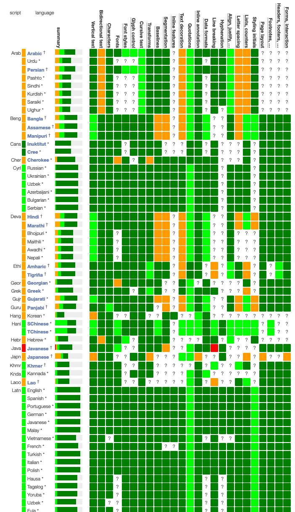
- Prioritised status for language/feature pairs.
- Cells link to gap-analysis doc sections.
Gap analysis
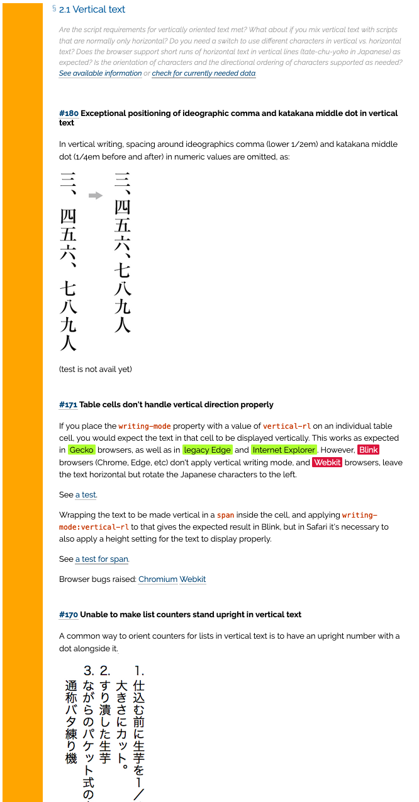
- Describe & prioritise issues.
- Supported by tests.
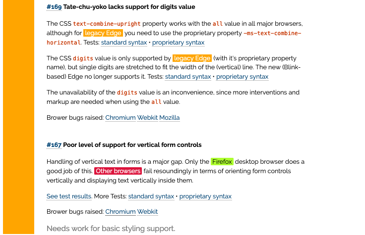
Documenting requirements
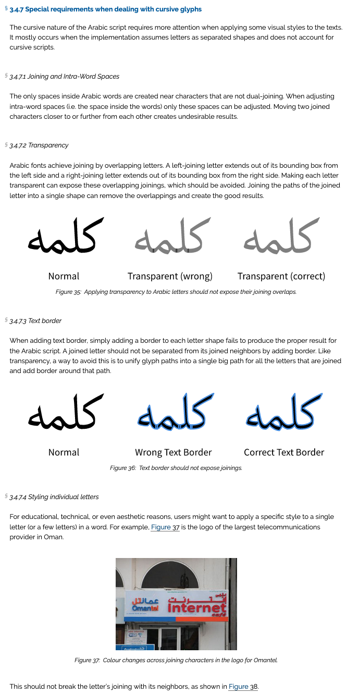
- Supports the gap-analysis work.
- Provides guidance for developers.
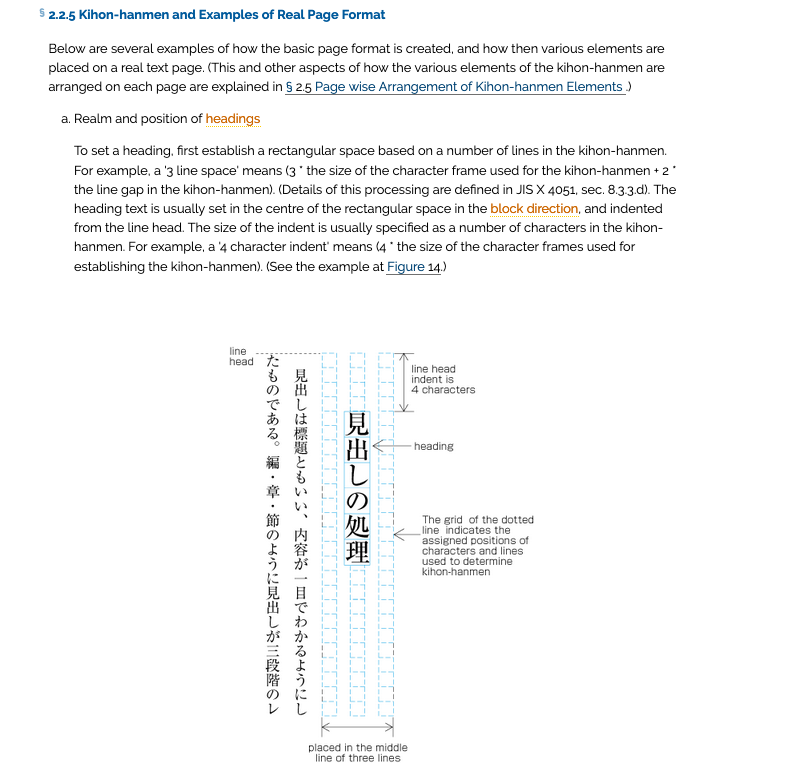
Networking
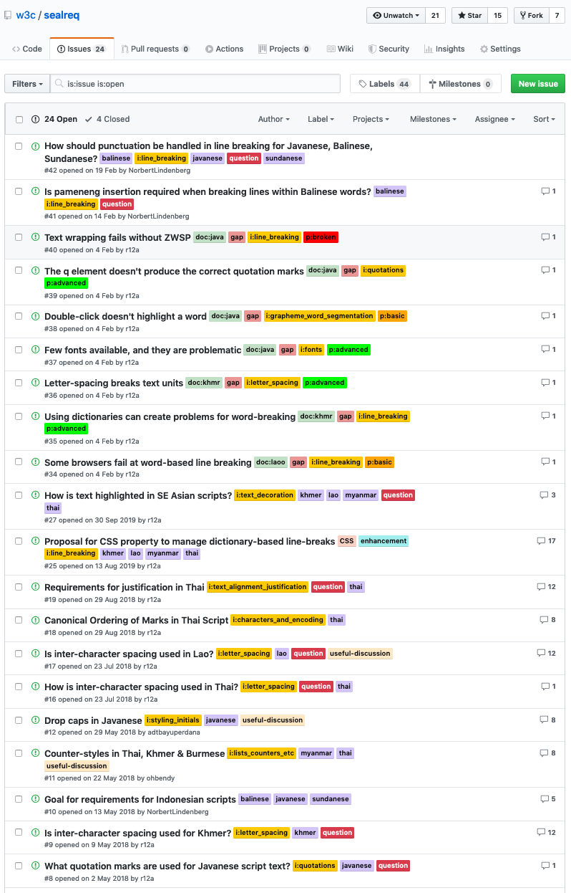
- Expert networks collaborate via GitHub issues.
- Daily digest notifications include related WG issues.
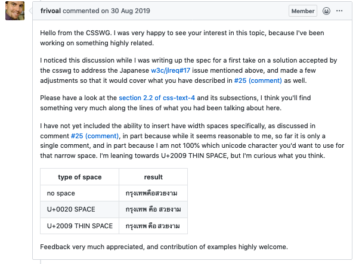
Implementer support
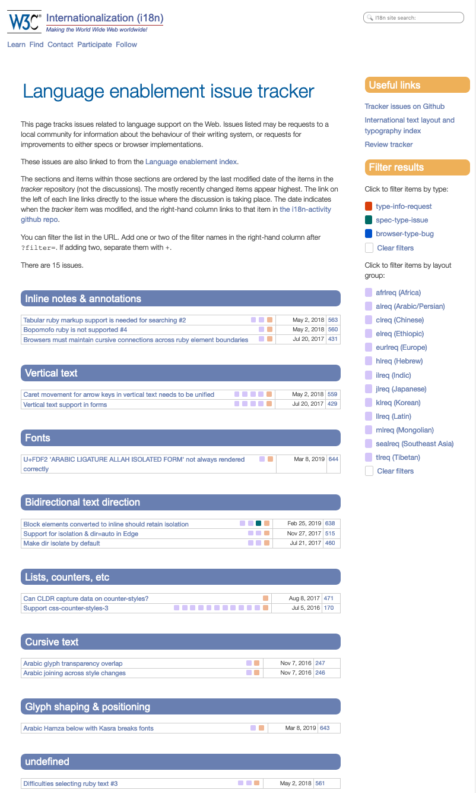
- Bugs raised against specs & implementations.
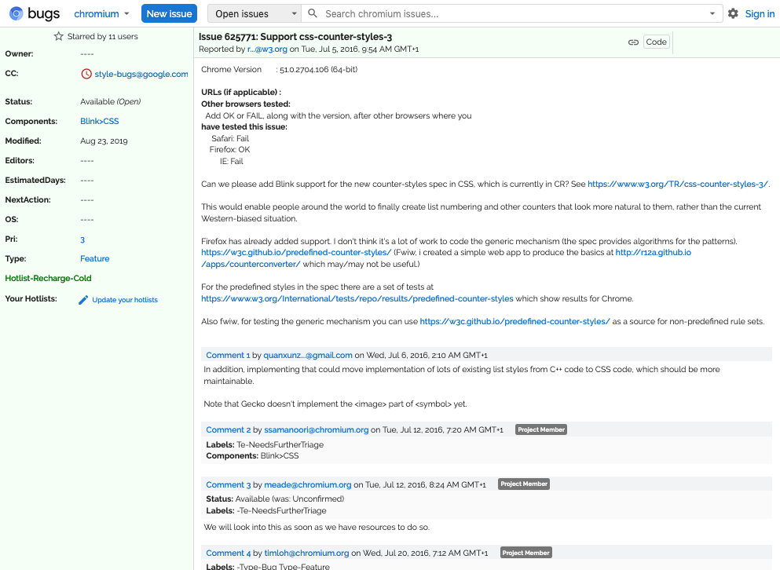
i18n sponsorship program achievements
Goals & results
- Widen participation of expert networks in LE groups, and by extension in W3C work
- Networks running for Arabic & Persian, Chinese, Ethiopic, Indic languages, Japanese, Mongolian, and SE Asian languages
- Initial group setup for African languages, European languages, Hebrew, and Tibetan.
- 103 expert contributors signed up to groups
- 259 subscriptions to notification lists, following the work
- 91 issues raised that put questions to the language experts
- 74 WG issues (eg. CSS/SVG/TTML/HTML/etc) brought to the attention of the experts
- 639 issues raised by LE groups in their work
Figures as of beginning of April 2020
Goals & results
- Increase scope and documented output of language enablement work.
- 14 gap-analysis docs in development:
Arabic & Persian, Chinese (Simplified & Traditional), Ethiopic (Amharic & Tigrinya), Devanagari (Hindi/Marathi), Bengali (Bangla & Assamese), Gurmukhi (Punjabi), Tamil, Gujarati, Japanese, Mongolian, Javanese, Khmer, Lao, Thai
- 6 additional provisional gap-analysis docs:
Cree & Inuktitut, Cherokee, Dutch, Georgian, Greek, Hungarian
- Japanese Layout Requirements (JLREQ) updated
- Simple ruby published as WG Note
- 15 issues tracking bugs raised for (typically multiple) browser implementers
- 9+ threads identified as useful resources in their own right
Figures as of beginning of April 2020
Goals & results
- Skill building/succession planning
Atsushi Shimono (Keio) and Fuqiao Xue (Beihang) have broadened our ability to do core support and language enablement work, and spread W3C institutional knowledge for i18n.
- Significantly improve guidelines and self-review checklists for developers
I18n review checklist updated & new self-review checklist developed. Significant advances included publication of Character Model for the World Wide Web: String Matching and Strings on the Web: Language and Direction Metadata
- Investigate ways to extend the i18n test framework, including to support tests and results for paged media generators
Exploratory test framework developed with GitHub-based interface (details later in this talk). Many tests migrated to WPT repo. Paged media test formats still TBD..
SUMMARY
- Internationalization Sponsorship Program was successful in enabling additional work within and beyond the core.
- The Language Enablement initiative was also very successful in expanding the reach of the W3C into new areas around the globe.
- Overall progress • Latest update
- Initial phase is nearing completion, but much more remains to be done to ensure that people all around the world can interact with the Web in their own language and script.
- Please help us find more experts to extend our networks.
- Please contact Jeff Jaffe if your organisation can step up as a sponsor for the next round.
Language Enablement Index
Language Enablement Index
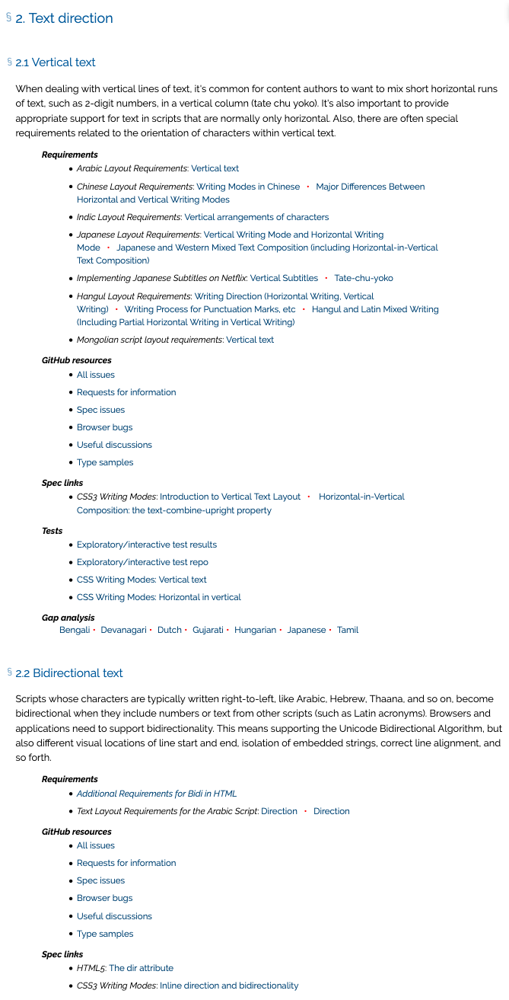
A place to find all the information we have been gathering.
Section headings harmonised across all LE framework deliverables.
The following examples are from the first subsection in the document: Vertical text.
Language Enablement Index
Links to requirements & specs
Language Enablement Index
Requests for information
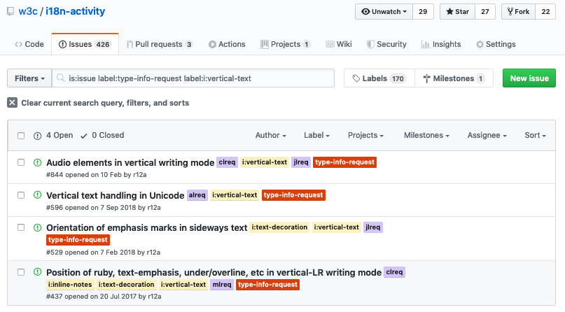
Language Enablement Index
Related issues in W3C WG specs
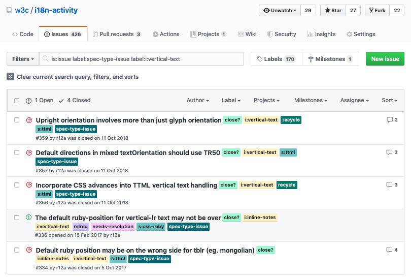
Language Enablement Index
Implementation bugs raised
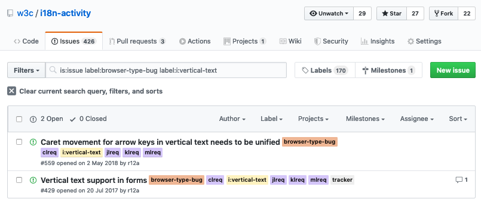
Language Enablement Index
Type samples
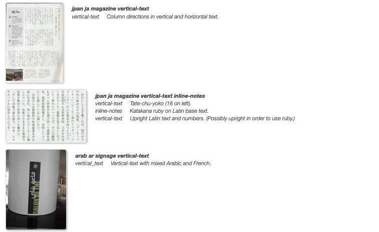
Language Enablement Index
I18n test suite
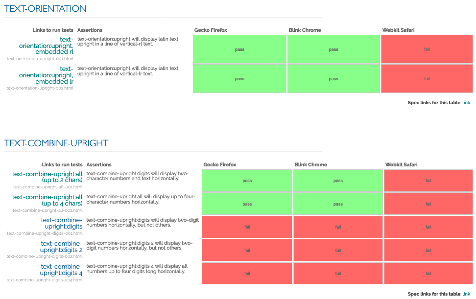
Language Enablement Index
Exploratory tests
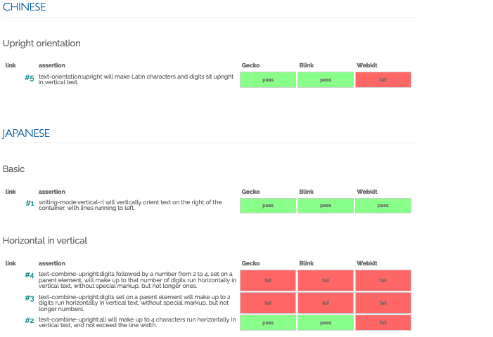
Summary
The Language Enablement Index is a place to find all the information we have been gathering.
- Links to requirements & specs
- Requests for information
- Related issues in W3C WG specs
- Implementation bugs raised
- Type samples
- Tests: i18n test suite & Exploratory tests
- Gap-analysis document sections
Recent developments
Gap analysis
Problem:
- GitHub pull requests appear formidable and difficult to use to many of the people we want to involve in developing gap-analysis.
Solution:
- Move content to GitHub issues
- Changes in issue immediately reflected in HTML doc
Benefits:
- Easier and faster to edit content
- Easier to hold and find discussions related to a particular topic
- Labels allow new and useful filtering of issues
Gap analysis: HTML doc
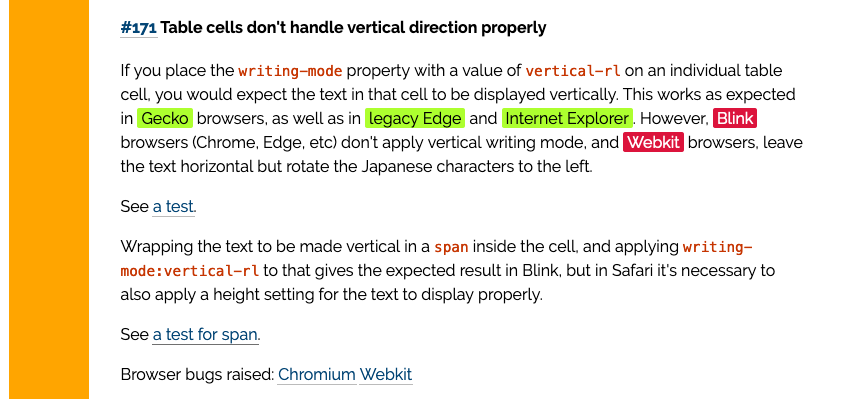
Gap analysis: Source in GitHub
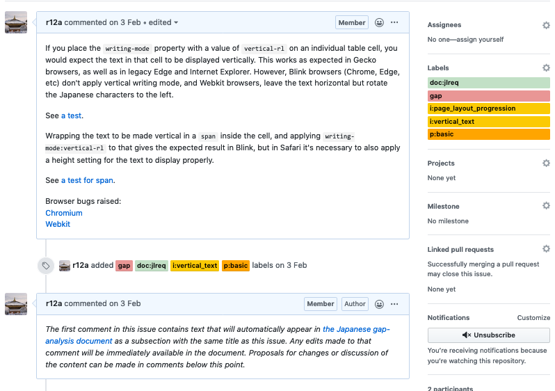
Gap analysis: Discussion in GH
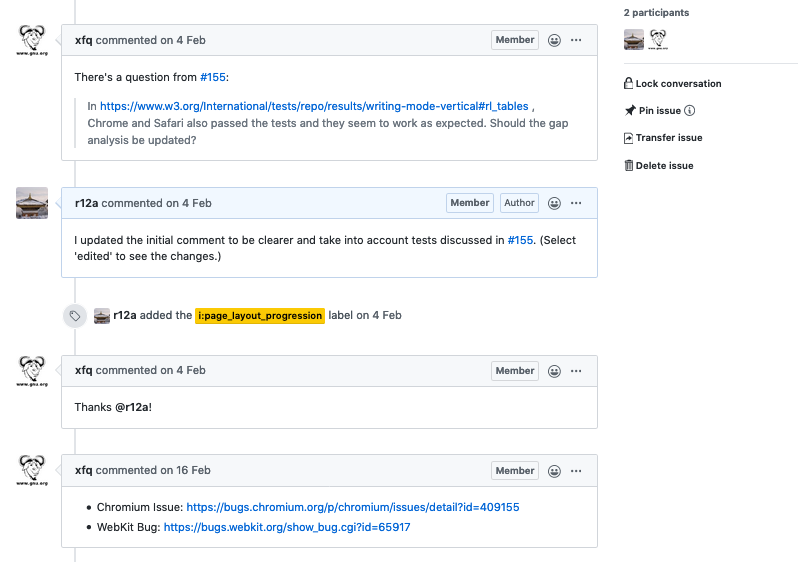
Gap analysis: Filtering/sorting
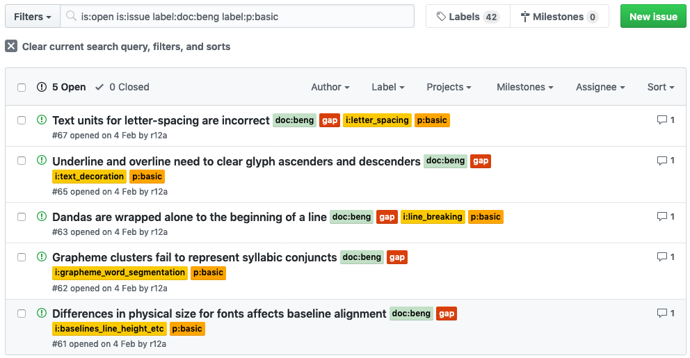
Gap analysis: Filtering/sorting
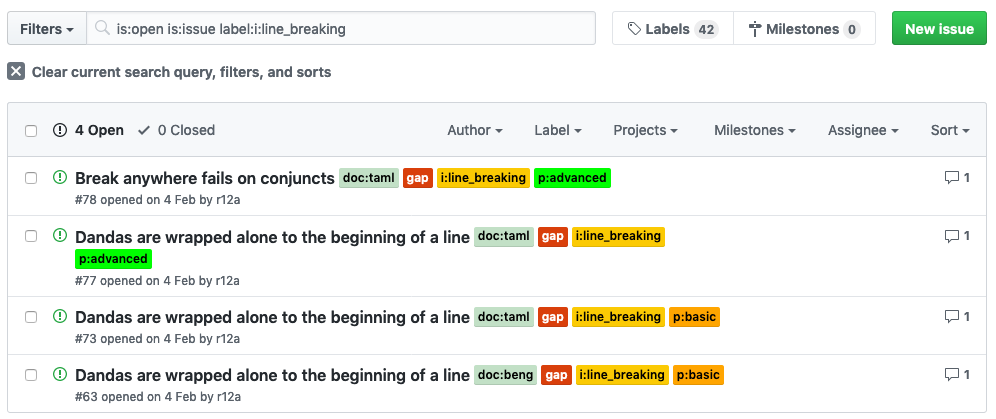
Exploratory tests
Problem:
- Difficult to learn to write WPT tests and time consuming to generate all the necessary files with the correct content.
- Especially important for gap-analysis work to have a fast & simple way to interactively create exploratory tests and record results.
Solution:
- Create test framework pages with form controls to add text, change language/font/box size/etc, and apply various CSS property values.
- Make a single button click record the state of any test page as a URL.
- Use GitHub issues to provide test instructions & detailed results.
- Changes in issue immediately reflected in HTML results summary docs.
Exploratory tests
Benefits:
- Significantly lowers the barriers for test production.
- Allows for very quick spot checks to be run up and circulated to others.
- Allows discussion of the tests, by using the issue comment fields.
- Especially useful for exploratory tests requiring many small tweaks and replication across multiple languages.
- Issue labelling allows for novel and useful ways of filtering & sorting tests.
Exploratory tests: Test page
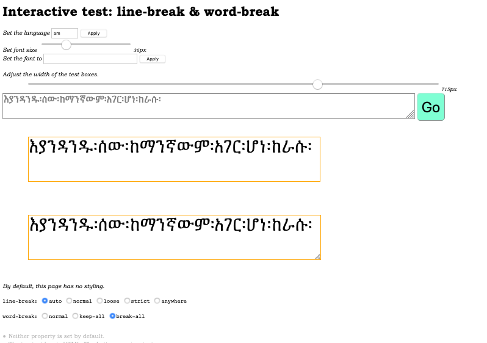
Exploratory tests: Page snapshot

Exploratory tests: Instructions & results
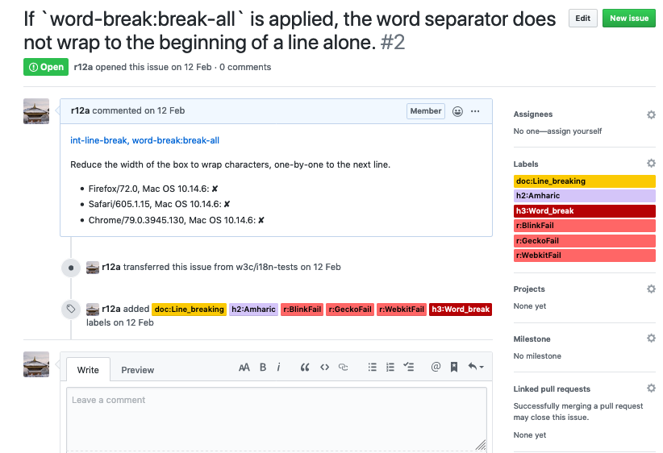
Exploratory tests: Summarised results
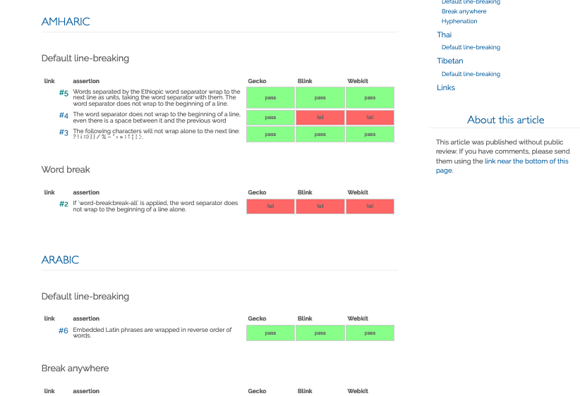
Summing up
Summary
- Developers and implementers are encouraged to:
This is a template for slides for AC 2020. To start the slide show, click on a slide (Shower) or press ‘A’ (b6+). For usage instructions, see at the end.